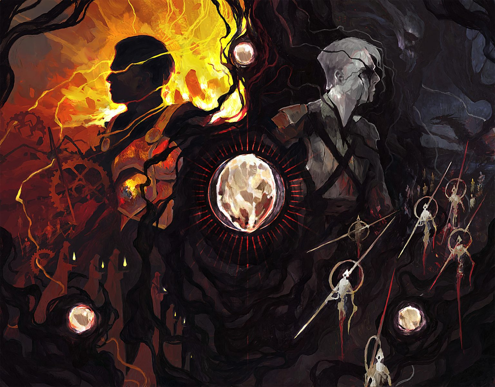

About Magic:The Gathering

Magic: the Gathering (or MTG for short) is the first ever Trading Card Game, created by Richard Garfield. It is one of the most complex games in the world, boasting over 25,000 unique cards, around 20 different formats both on and offline, and a rules book that could rival a legal code in verbosity and sheer length. In this game, you are a character called a planeswalker, and you are dueling an opponent planeswalker. You objective is to take your opponent out by either bringing them to 0 life, depleting all the cards in their deck, or a plethora of other card that result in your opponent losing the game.
One of the main appeals to playing Magic is the hundreds of strategies that can be played. You can smash people with giant dinosaurs, chain groups of powerful spells, destroy everything your opponents build up, ammass enormous armies of goblins, become a powerful enchanter, summon demons to do your bidding, and even play with cute cats and dogs. The list goes on and on.
Even though MTG is a complex game, it does not have to be difficult to start playing. Forunately, there is a large community of players that have created incredible resources to make playing, constructing decks, finding the right cards, etc. much easier and faster. This website hopes to help you find these resources easily so you can spend more time using them. This blog also provides some additional information on how to play and what to buy for this Trading Card Game.
Resources to Assist your MTG experience
Below is a large selection of websites and youtube channels to aid you in playing Magic, building decks, and more.
| Icon | Site Name | Description |
| EDH REC | Aids in finding cards to put in Decks | |
| Archidekt | Deck Building tool | |
| Mox Field | Deck Building tool | |
| EDH REC | Look up any card in the history of MTG | |
| Tolarian Community College | Youtube Channel for Product and Game Advice | |
| Magic.Wizards | Offocial Website for MTG | |
| TCG Player | Site to buy MTG Cards | |
| Card Kingdom | Site to buy MTG Cards |